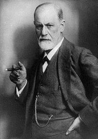

Phương pháp học Tiếng Anh hiệu quả nhất – Phần 2
Vì để đảm bảo tính khoa học của phương pháp Effortless English, nên Doremon sẽ trình bày rất chi tiết, kèm theo đó là các mảng kiến thức liên quan làm nền tảng: Tâm Lí học và Triết học.
Doremon sẽ cố gắng đơn giản hoá trong khả năng có thể, và nếu ai đó có hỏi: Liệu các kiến thức này có cần thiết hay không?
Câu trả lời: Nếu bạn muốn trở thành Master thì đây là những kiến thức mà các bạn phải biết. Nếu học để cho vui thì không cần biết để làm gì. Và Doremon luôn mong muốn giúp các bạn thành Master, cho nên sẽ bỏ thời gian để viết về vấn đề này, và chỉ cần một người hiểu được sau đó áp dụng vào cuộc sống thì bài viết này đã đạt được mục đích của nó.
Nội dung của bài viết hôm nay: “Taoism” – Đạo Lão–Trang
Có mấy ai trong chúng ta đã thực sự dùng hết khả năng của bản thân? Có người thì than phiền vì sự yếu kém của mình, có người thì tự trách bản thân tại sao ta lại không thông minh, rồi tiếp theo đó là các bài ca than thân trách phận, than trời trách đất về số phận hẩm hiu của mình.
Nhưng sự thật có phải là như thế? Có phải rằng một ngày ta nên ngủ 8 tiếng? Ta học bao nhiêu đây là đủ rồi, giới hạn của ta chỉ tới đó, …?
Qua bài viết này các bạn sẽ có câu trả lời: giới hạn của con người là do con người tự đặt ra – tài năng của con người là không có giới hạn, nếu có đó là giới hạn về tầm nhìn, giới hạn về sự hiểu biết….
Cho nên bài viết này sẽ cung cấp cho các bạn một tầm nhìn đủ lớn, một sự hiểu biết rõ ràng về tài năng trong mỗi chúng ta, sau đó hãy tháo xích, hãy mở xiềng để tài năng đang ngủ yên của ta được tuôn chảy.
Phân Tâm Học của Sigmund Schlomo Freud

Đây là một trường phái Tâm Lí học mà Doremon cực kì yêu thích, vì nó đi sâu vào việc phân tích, mổ xẻ từng ngóc ngách của não bộ. Nếu bạn hiểu được sự vận hành của bộ óc thì đồng nghĩa với việc bạn sẽ thay đổi nó để nó có thể vận động một cách hiệu quả nhất.
Doremon sẽ miêu tả nó đơn giản như sau: Trong bộ óc của chúng ta có 3 thành phần trí tuệ: ý thức, tiềm thức và vô thức.
-
Ý thức: là một thành phần của bộ óc có tác dụng tái tạo và xử lí thông tin mà chủ thể biết (kiểm soát) được.
VD: chúng ta biết mình đang làm gì, đang ăn món gì, đang đọc cái gì – đây là ý thức.
-
Tiềm thức: là những hoạt động tâm sinh lý, xử lý thông tin diễn ra bên ngoài sự kiểm soát của chủ thể, nhưng nó lại có liên quan trực tiếp đến các hoạt động tâm lí diễn ra dưới sự kiểm soát của chủ thể ấy.
Như vậy, tiềm thức thực chất là những tri thức mang tính chất gần như là bản năng, và hầu như ai đó trong chúng ta cũng đã từng trải nghiệm về vấn đề này. Có những hành động khi mới ban đầu ta còn chú ý, vì ta chưa quen, nhưng sau khi ta đã thực hiện nó quá nhiều lần thì lúc này nó đã trở thành phản xạ hay bản năng, và hầu như ta đã không còn “ý thức” gì về nó nữa.
Như việc nói tiếng Việt, hầu như từng câu từng lời “tự động” tuôn chảy ra khỏi miệng mà ta không kiểm soát…, đó là nguyên nhân dẫn tới việc nói lỡ lời, nói nhầm…
Trái ngược lại có ai đó nói mà phải tìm câu, tìm từ, phải ráp đúng 1 thứ tự… có, đây là trường hợp ta nói năng 1 cách thận trọng, có đề phòng…. Nhưng trong sinh hoạt bình thường, hầu hết việc nói đều là phản xạ tự nhiên hay bản năng.
Cái quan trọng ở đây là: Effortless English được thiết kế để việc nói tiếng anh trở thành bản năng hay là ở dạng tiềm thức. Muốn làm được điều này thì một lần nữa nhắc lại: repetition – sự lặp lại. Việc lặp đi lặp lại cùng 1 lượng thông tin sẽ khiến nó chuyển hoá sang 1 dạng mới: từ ý thức – xuống tiềm thức. Chúng ta nên biết ơn AJ Hoge về điều này, vì ông ta đã gửi tặng chúng ta chiếc chìa khoá của thành công: repetition.
Phương pháp truyền thống có mấy ai repetition? Chúng ta học hết bài này sau đó qua bài khác, hết từ mới này sau đó qua từ mới khác…, và cuối cùng chúng ta thất bại. Đây là điều hiển nhiên, vì bộ não đã được thiết kế như thế, bạn chỉ có thể chuyển thông tin xuống phần tiềm thức khi mà bạn đã lặp đi lặp lại nó quá nhiều lần.
-
Vô thức: là trạng thái tâm lí nằm ở tầng đáy sâu nhất của não bộ, là sự tái tạo và xử lí thông tin mà chủ thể không hề hay biết gì, nó khiến người ta hành động như 1 cái máy.
Hiện giờ ta đang sống, ta ăn, nhưng thức ăn vào bao tử của ta, nó được chế biết thành dạng nào: axit, tinh bột… ai làm điều này… đương nhiên vẫn là ta, nhưng ta hoàn toàn không hay biết. Khi ta còn sống, bộ não luôn hoạt động, tim đập liên hồi…. Có ai đủ bản lĩnh để kiểm soát hay nói rằng: tim ơi mày đừng đập nữa, hay não bộ ơi đừng hoạt động nữa.
Đây là 1 phần biểu hiện của vô thức, nhưng cái quan trọng mà bài này muốn nói đó là: hầu hết chúng ta đều bỏ quên phần vô thức và chỉ sử dụng phần ý thức, cho nên chúng ta lãng phí tài năng của mình một cách không thể tin được.
Chúng ta sống, chúng ta làm việc, chúng ta nói luôn có chủ đích, chúng ta tư duy… đều dựa trên phần ý thức. Nhưng sự thông thái của ý thức chỉ là giọt nước trong biển rộng mênh mông của vô thức.
Bài viết này sẽ cung cấp cho các bạn một cơ sở khoa học để đánh thức dậy con người khổng lồ đang ngủ yên – vô thức bởi vì: “Trong mỗi một con người tầm thường của chúng ta luôn ẩn chứa một bóng hình thiên tài trong đó”.
Taoism (Đạo Lão–Trang)
Chắc ai cũng biết đến Đạo Đức Kinh của Lão Tử và Nam Hoa Kinh của Trang Tử – tập hợp lượng tri thức liên quan đến nhiều khía cạnh, nhưng ở đây Doremon chỉ viết về khía cạnh này: con đường ngắn nhất để tới thành công – Thuận theo tự nhiên.
Thuận theo tự nhiên là cách xử thế của Đạo gia, là tự nhiên đi đến đâu thì ta sẽ theo đến đó. Một chiếc xuồng giữa dòng sông, chỉ cần nương theo sức gió thì vẫn ung dung băng băng trên nước như thường mà ta không cần tốn một chút sức để chèo chống làm chi.
Thuận theo tự nhiên thì “cong thì sẽ được bảo toàn, queo thì sẽ thẳng ra, trũng thì sẽ được đầy, cũ nát thì sẽ được mới”.
Thuận theo tự nhiên là cơ sở của Effortless English. Mọi sự thiết kế của AJ Hoge đều nhằm mục đích này, cho nên Doremon rất lấy làm tiếc cho những ai đã, đang và sẽ sử dụng Effortless English nhưng lại không hiểu được ý đồ của tác giả.
Thế tự nhiên ở đây là gì? Bất kì một đứa bé nào ở quốc gia nào cũng đều học ngôn ngữ mẹ đẻ một cách đơn giản mà không cần bất cứ một nỗ lực nào theo trình tự: nghe, nói sau đó mới đọc và viết. Và hầu hết không có ai đủ bản lĩnh để phân tích ngữ pháp của một câu.
Có nhiều học trò luôn hỏi AJ Hoge: tại sao phải dùng cái thì này, tại sao phải dùng cấu trúc câu kia, tại sao từ này lúc nằm ở đây, lúc nằm ở đó. AJ Hoge không trả lời, và ông nói chúng ta hãy quên các câu hỏi đó đi, vì ông ta cũng không thể nào biết. Ông ta chỉ biết rằng: trong cùng một trường hợp thì có nhiều cách diễn đạt, còn vị trí của từ thì ông ta thừa nhận: ông “bó tay”.
Tiếng Việt Nam của chúng ta, để diễn đạt ý nghĩa rằng ta thích ăn bánh, có thể:
Mẹ ơi, cho con cái bánh. Còn bánh không mẹ? Hết bánh rồi à? Mẹ mua bánh nhé! …
Còn về trật tự của từ thì có thể:
Ngày mai có em đi chơi không? Em có đi chơi ngày mai không? Em không đi chơi ngày mai à? …
Có bao nhiêu người Việt trong chúng ta đủ bản lĩnh để lí giải: Vì sao tôi phải dùng các câu trên? Vì sao cái từ kia nó nằm ở chỗ đó? Khi nào tôi nên dùng câu này?
Thuận theo tự nhiên là ở chỗ đó, AJ Hoge đã nói, việc học theo phương pháp nào là quyền của bạn, nhưng nếu bạn học Effortless English song song với việc học ngữ pháp thì điều này hoàn toàn vô bổ, vì nếu bạn học ngữ pháp là bạn đang huỷ hoại đi công sức mà AJ Hoge đã thiết kế. Học ngôn ngữ một cách tự nhiên thì không một ai học ngữ pháp cả. Chẳng có một người Anh, Mỹ bản xứ nào đủ khả năng phân tích một cấu trúc câu như những học sinh học Tiếng Anh theo phương pháp truyền thống, ngoại trừ những người cố học để soạn sách ngữ pháp.
Do vậy làm ơn hãy vứt sách ngữ pháp vào đống rác hay lò lửa đi. Nếu ai đã lỡ học ngữ pháp thì hãy ráng quên đi, còn ai chưa học thì nên mừng. Và các bạn yên tâm, AJ Hoge đã thiết kế một hệ thống để các bạn học ngữ pháp một cách tự nhiên mà không cần đến bất cứ một cuốn sách ngữ pháp nào (Doremon trình bày cái này sau).
Vì học theo tự nhiên là tự nhiên đi đến đâu, ta sẽ theo đến đó – một chân lí có tác dụng lên mọi lĩnh vực của cuộc sống. Người Anh nói câu nói như thế nào, ta gặp nhiều, nghe nhiều sau đó là bắt chước – tự nhiên là vậy. Một đứa bé khi mới sinh ra, vốn như tờ giấy trắng, ai dạy sao nó nghe vậy, nói gì thì bắt chước cái đó, lâu dần nó thành quen, sau đó nó dùng. Điều này cũng được Lí Dương – Trung Quốc, trình bày trong phương pháp English Crazy – học từng câu đơn Tiếng Anh, sau đó học các câu phức tạp, xong rồi dùng.
Phương pháp truyền thống có vấn đề gì?
Doremon định viết cụ thể về vấn đề này: “Cái chung với cái riêng, cái cũ và cái mới”, nhưng thời gian lại không cho phép.
Chắc các bạn cũng đang trong tâm trạng ngờ vực về Effortless English, vì phương pháp này chỉ mới ra đời và chỉ được một bộ phận nhỏ thừa nhận. Trái ngược lại với nó là phương pháp truyền thống – một phương pháp đã, đang và sẽ còn được dùng để giảng dạy cho tất cả các trường học trên toàn thế giới, có chiều dài lịch sử cả mấy trăm năm hoặc hơn.
Thế nhưng có ai tự hỏi: một phương pháp được thừa nhận bởi đám đông có thật sự chính xác? Một truyền thống kéo dài mấy nghìn năm có thật sự tốt đẹp? Hay có chăng đó chỉ là sự ngộ nhận giữa “sức ỳ” về tư tưởng với sự tiến bộ và đúng đắn, giữa thói quen được lặp đi lặp lại hàng trăm, hàng nghìn năm với sự chính xác, nếu nói mà không cần lịch sự thì có phải chăng đó là sự nhầm lẫn giữa “sự ngu dốt” với “sự thông thái”.
Ngày xưa chân lí của Aristoteles luôn được coi là “Thánh Kinh”, và đố ai dám đụng nếu người đó không muốn vào chảo dầu. Ở đây Doremon không bàn về Aristoteles thật sự, vì con người này tri thức rất khủng khiếp, mà chỉ nêu lên vài ví dụ về sự sai lạc của Aristoteles đã được thừa nhận đến mấy trăm năm. Aristoteles chỉ bằng vào trực giác đã kết luận: vật nặng rơi nhanh hơn vật nhẹ, và ai trong chúng ta cũng đồng tình. Nhưng thí nghiệm của Galie trên tháp nghiêng Pisa đã chứng tỏ kết luận trên là sai (ai rảnh thì đọc lại vật lí học cơ bản). Nhờ nó cơ học Newton mới ra đời.
Ngày xưa ai cũng tán dương học thuyết Địa Tâm của Ploteme (khoảng thế kỷ II sau CN) – xem trái đất là trung tâm của vũ trụ. Điều này kéo dài đến tận Copernicus (thế kỷ 15) mới bị phá vỡ bởi học thuyết Nhật Tâm – xem Mặt Trời là trung tâm.
Khi hình học Phi-Euclid của Lobasepxki chưa ra đời thì ai cũng nghĩ vũ trụ là phẳng, thế nhưng bây giờ thì vũ trụ lại cong – cụ thể là không gian cong, và khi độ cong của không gian bằng 0 thì vũ trụ đó là phẳng.
Khi thuyết tiến hoá của Charles Darwin chưa ra đời, thì ai cũng tự hào loài người có nguồn gốc từ Thượng Đế, nhưng giờ thì sao?
Vậy các bạn thấy được gì? Cái “ngu” của con người rất khủng khiếp, chúng ta cứ tin vào những thứ gì đó được thừa nhận bởi đám đông, hay những truyền thống kéo dài hàng thế kỷ được cho là quí báu. Nhưng thật sự giá trị của chúng là bao nhiêu?
Doremon không dám bàn, vì điều này là vô nghĩa, cho nên các bạn hãy dựa vào trí khôn của mình để đánh giá vấn đề.
Và hiện nay những bóng ma như Aristoteles, Galen (ông tổ y học) đã trôi qua, nhưng tre già măng mọc, lại xuất hiện những bóng ma khác, mà chúng ta cũng không nên đụng làm gì, nếu không muốn vào nhà đá gỡ lịch. Nhưng vẫn là câu hỏi: liệu những điều mà đám đông đang thừa nhận này có đúng hay không?
Giải phóng tài năng
Bài viết này dựa trên cuốn sách “Walden” mà AJ Hoge giới thiệu trong Effortless English, triết lí của nó gần như là của Lão–Trang, có nghĩa là hãy thuận theo tự nhiên để giải phóng toàn bộ tài năng của con người.
Tác giả của cuốn “Walden” là Henry David Thoreau – một người đã tự nguyện rời bỏ thành phố để vào trong rừng sâu chiêm nghiệm về các chân lý của cuộc đời. Và chân lý mà ông tìm được như sau, khi bạn chịu sống thực sự với lòng mình thì thành công sẽ vượt mức tưởng tượng, có nghĩa là bạn phải dám ước mơ và ước mơ đó càng lớn càng tốt.
Ông ta dùng ẩn dụ: – “Không nên xây lâu đài trên mặt đất, mà hãy xây nó trên trời”.
Chúng ta có ai dám ước mơ? Chúng ta sợ bị cười, bị chế nhạo, bị cho là mơ tưởng hay viển vông, bị cho là không thực tế. Thế nhưng bù lại những người sống “thực tế” đã đạt được những gì? Họ có hạnh phúc trong cuộc sống, họ có vui vẻ về điều mình đã làm hay là trái ngược lại. Khi bạn chấp nhận “vứt bỏ” ước mơ để quay về với thực tế, điều này đồng nghĩa với việc bạn đã hạn chế hết tài năng của mình – đây là kết luận dựa trên cơ sở khoa học và Doremon sẽ phân tích về nó.
Mấu chốt của kết luận về “sức mạnh ước mơ” là vô thức – đã trình bày ở phần trước. Vô thức có năng lượng và trí thông minh mà không gì đo lường được, thế nhưng nó lại bị khoá chặt. Tất cả mọi sự kiện trên thế giới đều xảy ra ngay tại 1 thời điểm. Bây giờ là 3h, Doremon đang viết bài, Mod thì làm việc của Mod, Admin thì có việc của Admin, mỗi người mỗi việc.
Thế nhưng phần ý thức chỉ có thể quan sát và giải quyết sự kiện theo từng bước một, ý thức của Doremon thì biết được Doremon đang làm gì, các bạn thì biết các bạn đang làm gì, tức là ta không thể biết được người khác đang làm gì, trừ khi ta theo dõi họ. Và điều này đã trở nên quá đỗi bình thường, bình thường tới mức nếu một ai đó đang ngồi ở Hà Nội mà lại biết được người khác ở HCM đang làm gì mà không thấy, nghe, nhìn…, cái này gọi là phi thường, hay siêu nhân hay ngoại cảm.
Chúng ta đã nhầm các bạn à, chúng ta đã nhầm lẫn đến mấy nghìn năm rồi, chúng ta cho rằng nhà ngoại cảm, thiên tài, nhà chiêm tinh…, là kẻ phi thường, và tài năng của họ là do một sức mạnh siêu nhiên nào đó.
Vấn đề này liên quan nhiều đến tôn giáo, cho nên Doremon sẽ không giải thích nhiều, mà các bạn hãy dựa vào “trí khôn của mình để phán xét”, muốn hiểu được Thuyết tương đối của Albert Einstein thì phải hiểu được cơ học NewTon, muốn hiểu được hình học Lobasepxki thì phải hiểu được hình học Euclid…, có nghĩa là muốn hiểu được các vấn đề trên thì các bạn phải có một lượng tri thức khoa học làm nền tảng, cho nên Doremon không tranh luận.
Dựa trên các nghiên cứu khoa học từ các thiên tài, các dị nhân, các lãnh tụ – tóm lại là từ những con người có tài năng kiệt xuất thì mọi tài năng của họ đều bắt nguồn từ vô thức. Cho nên mấu chốt ở đây là làm sao đánh thức dậy phần trí tuệ khổng lồ này, có 3 con đường sau:
-
Bị sự cố, như tai nạn, mất mát, bệnh tật….
Trên thế giới có rất nhiều con người thuộc dạng này, nếu bạn chịu tìm hiểu. Họ có thể không cần ngủ, vẫn sống, họ có những dự đoán lạ kì, và Doremon còn nhớ là có 2 anh em “Thiên tài lịch pháp” (không nhớ tên), bị một chứng bệnh nào đó mà có thể nói ra sự kiện của bất cứ ngày nào trong quá khứ. Đây là các sự kiện thực sự chứ không phải là các tin giật gân trên báo chí, anh em tìm hiểu về lĩnh vực này sẽ thấy.
-
Đánh thức tài năng của phần vô thức bằng Y Học.
Dựa vào hiểu biết có hạn, nên Doremon chỉ biết rằng, chưa trường hợp nào thành công.
-
Cái này chúng ta làm được: đánh thức bằng sự khổ luyện và kiên trì.
Dễ thấy nhất là các hành giả YOGA – những người có khả năng phi thường thông qua tập luyện YOGA ròng rã và nghiêm túc.
– Quay lại vấn đề “ước mơ”.
Theo Phân Tâm học thì khi chúng ta có 1 ham muốn đủ lớn, thì ham muốn này sẽ đánh thức được phần vô thức, vì nhiệm vụ chính của vô thức là: tạo ra sự cân bằng trong não bộ. Khi bạn ham muốn một điều gì quá mức thì cơ thể bạn sẽ cảm thấy bức rức, khó chịu nếu ham muốn này không được thoả mãn, do vậy vô thức sẽ làm nhiệm vụ này.
VD: Khi bạn yêu một ai đó mãnh liệt, hay có một ham muốn gì đó mà “đời thường” không chấp nhận, thì vô thức sẽ giải toả bằng cách: cho bạn “hưởng thụ” điều đó trong mơ. Cho nên giấc mơ đối với Phân Tâm học chỉ là sự giải tỏa những ham muốn.
VD: Một người hay nóng nảy, khi bị “chọc điên” thì người này sẽ bức rức, khó chịu và lúc này phần vô thức sẽ ra tay, có thể người này đánh, hay giết nạn nhân để thoả mãn. Và sau khi đánh hay giết xong, thì nhiệm vụ của vô thức đã xong và người này quay lại trạng thái ý thức như ban đầu, lúc này mới thấy hối hận, ăn năn.
Và cuốn “Walden” của Henry David Thoreau bảo chúng ta làm điều này. Hãy dám ước mơ, hãy sống hết mình, ước mơ càng lớn càng tốt và lúc này bạn sẽ đạt được ươc mơ dễ dàng hơn bản tưởng tượng rất nhiều lần. Bởi vì ước mơ phải mạnh, phải lớn thì nó mới đủ sức “ám ảnh” chúng ta, và sự ám ảnh này sẽ “kéo dậy phần vô thức – nguồn tài năng kinh khủng đang ngủ yên”.
Newton nhìn thấy quả táo rơi thì phát minh ra định luật vạn vật hấp dẫn. Einstein nằm mơ thấy mình cưỡi lên ánh sáng – thuyết tương đối ra đời. Mendelep – cha đẻ của bảng tuần hoàn nằm mơ thấy các chất sắp xếp theo dòng theo cột. Kakule thấy mấy con khỉ cắn vào đuôi nhau sau đó vòng Benzen ra đời. Mozalt đi dạo cho tiêu cơm bỗng nhiên các nốt nhạc nhảy lên trong đầu…, còn vô vàn ví dụ như thế nếu bạn chịu tìm.
Cái mấu chốt của những còn người nêu trên đó là “SỰ ÁM ẢNH”.
Họ bị các công trình, các bài toán, các vấn đề hóc búa ám ảnh tới mức mà họ khó có thể ngủ, ăn không ngon…. Chìa khoá là chỗ này, các bạn phải dám ước mơ, ước mơ phải mạnh, phải lớn để rồi các bạn sẽ được tiếp sức bởi “con người thiên tài đang ngủ yên trong chúng ta – phần vô thức”.
Nhưng sự ám ảnh vẫn chưa đủ, David Thoreau nói: “bạn phải xây toà lâu đài trên trời, nhưng để nó đứng vững thì phải cần tới cái móng”. Có nghĩa là để biến ước mơ thành hiện thực thì ta phải hành động, hành động là cái nền móng để một toà lâu đài đứng vững chãi hiên ngang trên trời.
Các thiên tài kể trên, không ai ngồi mơ mộng để rồi thành công tự rớt xuống, mà họ làm việc từ ngày này sang ngày nọ, năm này sang năm kia, sau đó họ đạt được điều mình muốn.
Vậy thông điệp của David Thoreau mà Doremon muốn gửi gắm ở đây là gì? Dù bạn có là ai, có già hay trẻ, có giàu hay nghèo, có xuất thân nghèo hèn hay cao quí, thì chỉ cần bạn dám ước mơ và dám hành động thì bạn sẽ không cô độc, luôn luôn có sự trợ giúp từ một sức mạnh siêu nhiên nào đó mà ta không hình dung được. Đừng sợ rằng mình không đủ khả năng, ai trong chúng ta cũng thừa khả năng, có điều ta không biết sử dụng. Nếu bạn chịu học, chịu tiếp thu, lên diễn đàn sẽ có người giúp bạn, trái ngược lại bạn cứ ù lì, nản lòng thì ai muốn giúp? Quy luật tự nhiên của Lão – Trang lại xuất hiện, cứ nương theo sức gió, cứ sống hết mình, thì thành công sẽ dễ dàng hơn những gì mà bạn tưởng.
Tương tự cho việc học Tiếng Anh, hãy đặt mục tiêu cao lên, hãy quên đi học để làm bài test, học để lấy cái bằng, mà học để sau này ta đi làm ăn với quốc tế, ta hoà nhập với thể giới, ta sử dụng Tiếng Anh như một công cụ để cái thiện cuộc sống…. Còn nhiều lắm, nhưng hãy nhớ: Ước mơ cho lớn, sau đó hành động.